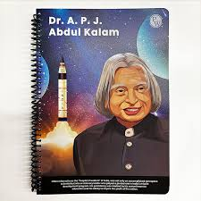

A.P.J. Abdul Kalam (born October 15, 1931, Rameswaram, India—died July 27, 2015, Shillong) Indian scientist and politician who played a leading role in the development of India’s missile and nuclear weapons programs. He was president of India from 2002 to 2007.